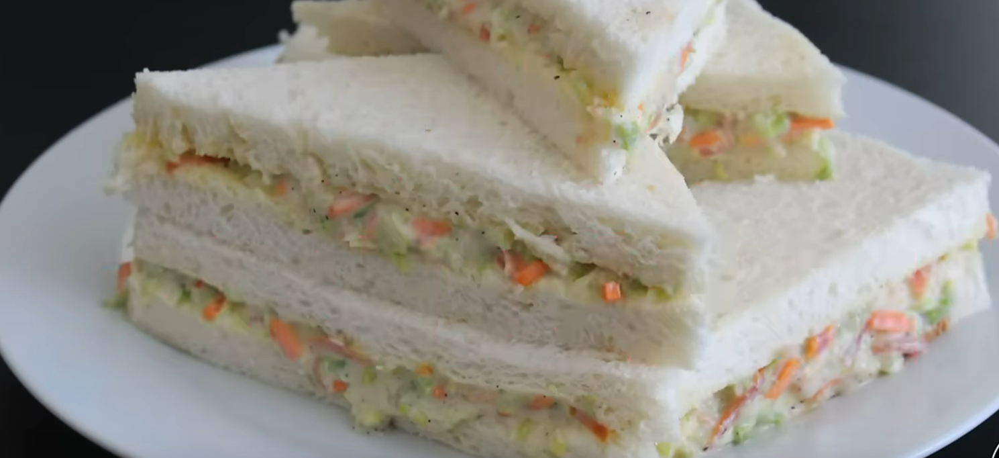

Winter Heart Sandwitch

Stuff to make with
- Chopped capsicum 1/4 cup
- chopped carrots 1/4 cup
- Cabbage 1/2 cup
- Tomato 1/4 cup
- Cucumber 1/4 cup
- Salt 1/2 tsp.
- Black pepper 3/4 tsp.
- Mayonnaise 4 Tbsp
- white pepper powder 1/2 tbsp
- Butter
Steps
- Add the veggies to a glass bowl
- Add the Mayonnaise in it then add the spices oohhhhh ya
- get bread white or brown up to you
- then spread the butter on two slice
- AND THEN spread the sauce on one side
- THen close the sandwhich and run away
- cONGRATUALIOTNS YOU AHVE FINSIHED THE MOST DIFFICULT RECIPE HERE BUT NOW YOU MUST RUN FOREVER AS THE FEDS ARE AFTER YOU NOW
- GOOD LUCK